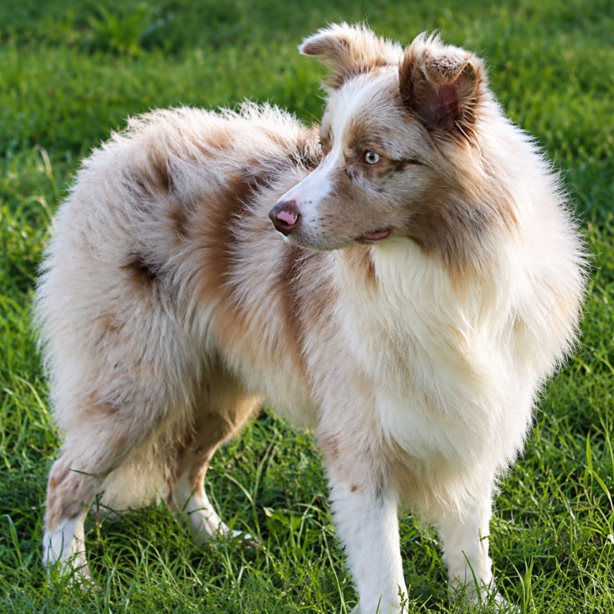

Padreador

Gucci
Vermelho Merle, olhos expressivos, pelagem densa, excelente temperamento.
Saúde: Laudo Oficial HD-A e Cotovelos Normais
DNA: Livre de alterações genéticas da raça
Descanso: Respeitamos intervalos completos entre cios